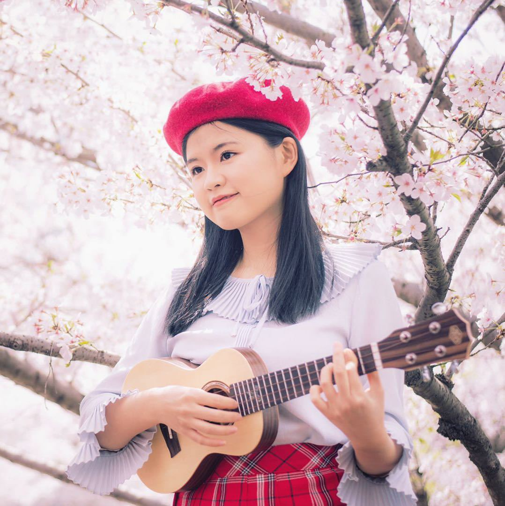

Yiqing Zhang (张一清)
|  | Yiqing Zhang Ph.D. (CEE), Nanyang Technological University, Singapore 1 Cleantech Loop, CleanTech One, 05-10, Singapore 637141 E-mail: yzhang112@e.ntu.edu.sg |
ZHANG Yiqing is a Ph.D. candidate in School of Civil & Environmental Engineering (CEE) and Nanyang Environment & Water Research Institute (NEWRI) at Nanyang Technological University (NTU) in Singapore. She has over 10 years research experience in water and wastewater treatment, and her research focuses on the removal of emerging water pollutants using UV photolysis and UV-based advanced oxidation processes. As a researcher of environmental engineering, she has published more than 10 manuscripts and book chapters on UV-AOPs and has been invited to make presentations for several international conferences. Besides a researcher, she is also a talented musician, teacher, and online influencer.
Publications
Journal Papers
Zhang Y., Zhou L., Zhang Y., Tan C. Inactivation of Bacillus subtilis spores using various combinations of ultraviolet treatment with addition of hydrogen peroxide. Photochemistry and Photobiology, 90 (2014) 609-614.
Zhang Y., Zhou L., Zhang Y. Investigation of UV-TiO
 photocatalysis and its mechanism on Bacillus subtilis spores inactivation. Journal of Environmental Sciences, 26 (2014) 1943-1948.
photocatalysis and its mechanism on Bacillus subtilis spores inactivation. Journal of Environmental Sciences, 26 (2014) 1943-1948.Zhang Y., Zhang Y., Zhou L., Tan C. Factors affecting UV/H2O2 inactivation of Bacillus atrophaeus spores in drinking water. Journal of Photochemistry and Photobiology B: Biology, 134 (2014) 9-15.
Zhang Y., Zhang J., Xiao Y., Chang V.W.C., Lim T.-T. Kinetic and mechanistic investigation of azathioprine degradation in water by UV, UV/H2O2 and UV/persulfate. Chemical Engineering Journal, 302 (2016) 526-534.
Zhang Y., Zhang J., Xiao Y., Chang V.W.C., Lim T.-T. Direct and indirect photodegradation pathways of cytostatic drugs under UV germicidal irradiation: Process kinetics and influences of water matrix species and oxidant dosing. Journal of Hazardous Materials, 324 (2017) 481-488.
Zhang Y., Xiao Y., Zhang J., Chang V.W.C., Lim T.-T. Degradation of cyclophosphamide and 5-fluorouracil in water using UV and UV/H2O2: Kinetics investigation, pathways and energetic analysis. Journal of Environmental Chemical Engineering, 5 (2017) 1133-1139.
Zhang, Y., Xiao, Y., Zhong, Y., Lim, T.T. Comparison of amoxicillin photodegradation in the UV/H2O2 and UV/persulfate systems: Reaction kinetics, degradation pathways, and antibacterial activity. Chemical Engineering Journal, 372 (2019) 420-428.
Conference Papers
Zhang Y., Zhang Y. Inactivation of Bacillus subtilis spores using different combination modes of UV and H2O2. IUVA EMEA Regional Conference, Karlsruhe, Germany, 4-5, Jun. 2013. (poster presentation)
Zhang Y., Zhang Y. Photocatalytic inactivation and mechanism investigation of Bacillus subtilis using UV-TiO2 treatment. IUVA & IOA 2013 World Congress, Las Vegas, USA, 22-26, Sep. 2013. (oral presentation)
Zhang Y., Zhang Y. Factors affecting UV/H2O2 inactivation of Bacillus subtilis spores in drinking water. IOA-EA3G International Conference, Shanghai, China, 2-3, Dec. 2013. (oral presentation)
Zhang Y., Lim T.-T. Degradation of mixed cytostatic drugs by UV, UV/H2O2 and UV/PS. IWA Micropol & Ecohazard Conference, Singapore, 22-26, Nov. 2015. (oral presentation)
Zhang Y., Lim T.-T. Photodegradation of amoxicillin by UV, UV/H2O2 and UV/PS: reaction kinetics, degradation pathways and antibacterial activity. 10th European meeting on Solar Chemistry and Photocatalysis: Environmental Applications (SPEA10), Almeria, Spain, 4-8, Jun. 2018. (oral presentation)
Book Chapter
Zhang Y., Lim T.-T. Chapter 12 Photodegradation of cytostatic drugs in low-pressure UV photoreactor through direct and indirect pathways. In Fate and Effects of Cytostatic Pharmaceuticals in the Environment. Eds. Heath E., Filipic M., Kosjekw T., Isidori M. In press. Springer.
Music
Here is a full list of videos Yiqing has uploaded to the internet. You can get access to these videos by simply click the buttons below.
Hope you would enjoy them. Here is a full list of all the submissions and we also offer several special editions to you!
[Full List] [Original Songs In Chinese] [With Deepthi] [Traveling with Ukulele] [Tutorials for musical instruments (In Chinese)]
Timeline
2017
《陪你的决心》原创尤克里里弹唱 2017-11-04
尤克里里弹唱City of Stars 2017-10-29
Kalei&白桦树娃娃尤克里里弹唱《Lazy Song》 2017-10-28
中美乐手尤克里里键盘弹唱《Apologize》 2017-10-28
尤克里里入门教学-什么是尤克里里 2017-10-07
爱乐之城City of Stars尤克里里弹唱 2017-10-06
徐秉龙《鸽子》尤克里里弹唱教程 2017-10-03
徐秉龙《鸽子》吉他弹唱教程 2017-09-29
快速学会写歌《作曲篇》 2017-09-25
快速学会写歌《作词篇》 2-17-09-25
一封来自博四待下架学姐的《青春遗言》 2017-09-14
胡夏张一清合唱《想把我唱给你听》CCTV6《国片大首映》 2017-08-25
《追光者》：尤克里里少女追寻吉他少年的故事 2017-08-20
白桦树娃娃原创《下个季节》李思易褚高超友情出演 2017-07-27
《鸽子》尤克里里弹唱 2017-07-20
《狮城椰子》采访视频 2017-06-29
《咖喱咖喱》尤克里里弹唱 2017-05-28
《恋曲IN济》祝母校同济大学生日快乐 2017-05-17
《演员》人民的名义版 吉他 & 尤克里里弹唱 2017-05-01
《暧昧》吉他 & 尤克里里弹唱 2017-04-18
《有种你就来》公益歌曲 2017-04-16
《高尚》吉他 & 尤克里里弹唱 2017-03-30
《四和弦弹五月天》 2017-03-29
《父亲写的散文诗》 吉他 & 尤克里里弹唱 2017-03-17
《送你一朵小红花》 2017-03-14
《繁花》 吉他 & 尤克里里弹唱 2017-03-14
《女孩你知道么》 尤克里里弹唱 2017-03-12
《凉凉》 吉他 & 尤克里里弹唱 2017-03-03
《我要你》 吉他 & 尤克里里弹唱 2017-02-14
《夜车》 吉他 & 尤克里里弹唱 2017-01-21
2016
《成都》 吉他 & 尤克里里 & 尤贝司 & 键盘 2016-12-27
《前前前世》（新海诚《你的名字》主题曲） Las Vegas 2016-12-26
《怪兽大作战》 尤克里里弹唱 2016-12-26
《BABY达尼亚》 吉他弹唱教学 2016-12-06
《BABY达尼亚》 尤克里里弹唱教学 2016-12-05
《BABY达尼亚》 键盘 & 吉他 & 尤克里里 & 尤贝司弹唱 2016-11-30
《海芋恋》尤克里里弹唱教学 2016-11-21
《海芋恋》尤克里里弹唱 2016-11-20
《你在终点等我》键盘 & 尤克里里弹唱 2016-11-11
《好想你》与原唱四叶草合唱 2016-11-05
《下一秒》钢琴 & 尤克里里 & 键盘弹唱 2016-10-20
《PPAP》尤克里里弹唱 2016-10-10
《微微一笑很倾城》吉他 & 尤克里里弹唱 2016-10-08
ukulele原创《海南鸡饭》 2016-09-19
《不要再孤单》钢琴 & 尤克里里弹唱 2016-09-13
《告白气球》尤克里里弹唱 2016-09-02
《大鱼》（《大鱼海棠》印象曲）尤克里里弹唱教学 2016-08-21
《大鱼》（《大鱼海棠》印象曲）键盘弹唱教学 2016-08-13
《七月上》guitar & ukulele弹唱 2016-07-29
《大鱼》（《大鱼海棠》印象曲）尤可里里 & 键盘弹唱 2016-07-25
四叶草《在一起》ukulele弹唱教学 2016-07-14
四叶草 JoyceChu《在一起》ukulele弹唱 2016-07-07
Beyond《喜欢你》一人乐队 箱鼓 & 键盘 & ukulele 2016-06-30
《哆啦A梦》ukulele弹唱教程 2016-06-14
《哆啦A梦》张一清 渡边海智 隔空合作 尤可里里&架子鼓 2016-06-01
张悬《宝贝》吉他教程 2016-05-21
尤吉他弹唱张悬《宝贝》 2016-05-08
Try Everything《疯狂动物城》主题曲Ukulele教程 2016-04-30
Try everything - Shakira - Zootopia - ukulele duet cover by Yiqing & Deepthi疯狂动物城主题曲 乌克丽丽弹唱 张一清 2016-04-21
The Show - Lenka - Ukulele Duet - Covered by Yiqing and Deepthi 2016-04-16
Ukulele教学视频 《The show》2016-04-16
十三五之歌 The 13 WHAT - A song about China's 13th 5-year-plan (ukulele duet cover by Deepthi & Yiqing) 2016-04-10
Travel with ukulele-Switzerland-Part 2-Yiqing带着小u去旅行－瑞士篇（下）2016-03-31
Travel with ukulele-Switzerland-Part 1-Yiqing带着小u去旅行－瑞士篇（上）2016-03-31
甜蜜具现式－sunshine－ukulele教程 2016-03-31
Travel with ukulele-Germany-Yiqing带着小u去旅行－德国篇 2016-03-30
You are my sunshine - Nanyang Technological University ukulele club first performance 2016-03-30
《娃娃ukulele干货分享》乌克丽丽新手入门教程（第二课）ukulele tutorial for beginners (Lesson 2) 2016-03-30
Sunshine《甜蜜具现式》ukulele弹唱 2016-03-13
《娃娃ukulele干货分享》乌克丽丽新手入门教程（第一课）ukulele tutorial for beginners (Lesson 1) 2016-03-08
CNY拜年神曲《七洞强》尤可里里弹唱教程 2016-02-02
CNY拜年神曲《七洞强》ukulele弹唱 2016-02-02
周杰伦《晴天》ukulele弹唱 2016-01-27
2015
四叶草《好想你》ukulele弹唱 2015-12-27
《往事只能回味》（电影唐人街探案推广曲）钢琴ukulele弹唱 2015-12-22
《一次就好》（夏洛特烦恼主题曲）guitar & ukulele弹唱 2015-12-05
《Hey Soul Sister》中外妹子Ukulele弹唱 2015-11-28
冷碗碗《夏洛特烦恼》吉他弹唱 2015-11-05
吴汶芳《孤独的总和》吉他ukulele弹唱 2015-10-05
田馥甄Hebe《小幸运》吉他ukulele弹唱 2015-09-03
《七夕之歌》ukulele弹唱 2015-08-20
朴树《在木星》吉他弹唱 2015-08-03
《栀子花开》吉他ukulele口琴合奏 2015-07-17
ukulele原创《分手快乐托福君》 2015-06-13
ukulele儿歌《小龙人》 2015-05-31
Maroon 5《Sugar》一人乐队 2015-05-23
《下雨的垦丁》ukulele弹唱 2015-05-18
陈粒《奇妙能力歌》吉他口风琴弹唱 2015-04-28
《see you again》一人乐队 2015-04-20
四叶草《Malaysia chabor》马来西亚的查某 ukulele弹唱 2015-04-11
ukulele口琴合奏《当你老了》 2015-04-05
ukulele弹唱《药别停》 2015-03-28
ukulele弹唱邓紫棋《多远都要在一起》 2015-03-19
ukulele弹唱《Demons》 2015-03-15
邓紫棋《多远都要在一起》吉他教程 2015-03-01
吉他弹唱邓紫棋《多远都要在一起》 2015-02-22
ukulele弹唱《遇见你的时候所有星星都落到我头上》 2015-02-17
原创《下个季节》（遗珠篇）致异地恋 2015-02-15
原创《下个季节》 致异地恋 2015-02-14
吉他弹唱周杰伦婚礼音乐 2015-02-14
钢琴弹唱《时间都去哪了》 2015-01-23
ukulele弹唱《新加坡派》 2015-01-15
吉他弹唱改编周杰伦《算什么男人》《说好的幸福呢》 2015-01-08
2014
吉他弹唱周杰伦《听爸爸的话》 2014-12-30
ukulele弹唱《浪花一朵朵》 2014-12-24
圣诞歌 2014-12-23
吉他弹唱马頔《南山南》 2014-12-12
《恋曲IN济》——同济大学“恋爱IN济”主题曲 2014-11-09
ukulele弹唱《The show》 2014-11-01
《明天我要嫁给你了》 2014-10-01
《When you say nothing at all》 2014-06-10
钢琴弹唱《我的歌声里》 2014-05-21
钢琴弹唱《天黑黑》 2014-03-16
2013
吉他弹唱《爱的箴言》 2013-07-05
吉他弹唱《致青春》 2013-07-02
2012
Ukulele弹唱《爱要坦荡荡》 2012-11-01
Ukulele弹唱《Hey soul sister》 2012-10-09
吉他弹唱《明天，你好》 2012-07-21
吉他弹唱《心愿》 2012-07-18
吉他弹唱《大龄文艺女青年之歌》 2012-07-15
吉他弹唱《我真的受伤了》 2012-03-31
2011
夜晚在夜晚深藏 我在口袋里歌唱 2011-08-17
吉他弹唱《儿歌》 2011-08-04
吉他弹唱《Moon river》 2011-08-03
吉他弹唱《越长大越孤单》 2011-08-02
吉他弹唱《醉清风》 2011-07-06
吉他弹唱《那些花儿》 2011-07-04
吉他弹唱《玻璃杯》 2011-07-04
吉他弹唱《童年》 2011-07-03
Fade to black ——by 废墟婴儿乐队 2011-07-03
Creep ——by 废墟婴儿乐队 2011-07-03
Knocking on heaven's door ——by 废墟婴儿乐队 2011-06-27
吉他弹唱《爱的代价》 2011-06-25
吉他弹唱《一样的夏天》 2011-06-25
吉他弹唱《旅行的意义》 2011-02-24